La indecisión es la llave a la
flexibilidad
|
|
||
|
La indecisión es la llave a la
flexibilidad |
|
|
|
********************************************************************************************* < Newer news can be found on scotlandnews |
| Mr. Fred has left the building, Chile, April 15, 2005. | ********************************************************************************************* Team North is bereft of Mr. Fred, who has headed home to be at his brother's wedding. He managed to survive the entire paragliding and kayaking trip intact until three days before going home. On his last flight in Chile, along a giant sand dune, he managed to find a rock and smack into it at 20 km/h. After yet another trip to Clinic Iquique, where paragliders are some of their best customers, he got some stitches and was told to take up golf instead of flying. Simon ponders: "It all started to go wrong when we left Jim behind..." 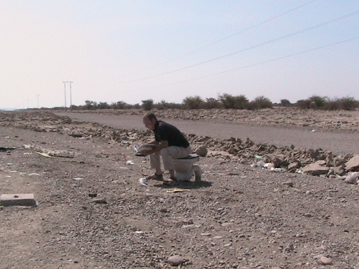 |
| Flying in the Atacama Desert, Chile, March-April 2005. | ********************************************************************************************* Team North on the paragliding trip to the northern Chilean desert are all having a fabulous time, setting personal-best records for crosscountry flying. 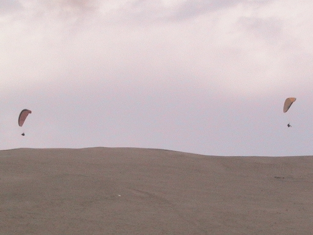 Ferg decided to push the limit a little bit more and had an accident when he got caught in a gravity storm which collapsed his wing close to hill, about 10 m. up. He hit the hill hard, the back protection worked, and he was able to wiggle his toes. Then he noticed that his wrist was at an odd angle. The damage is a badly-fractured radius bone, which was operated upon. He has pins in the wrist for a month, so no sports for him for a while. Still, as he knows, it's better to be lucky than good. Here's an x-ray picture showing his pins. They'll be removed within a month, so he'll be able to get through airport metal-detector machines. 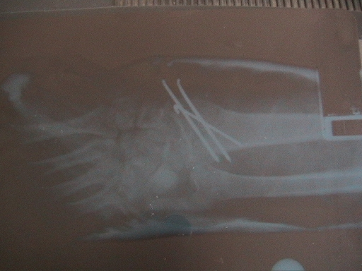 Simon goes flying over the desert. 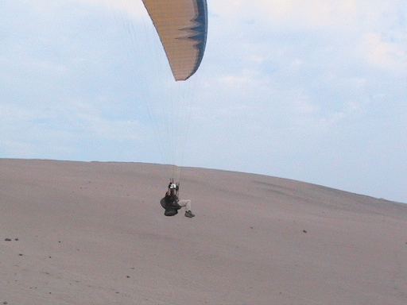 This fox is clearly thinking that these guys are a menace to themselves. 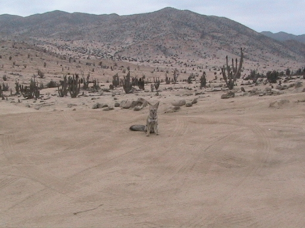 Stupid gringos with their kayaks in the middle of the driest place on earth. 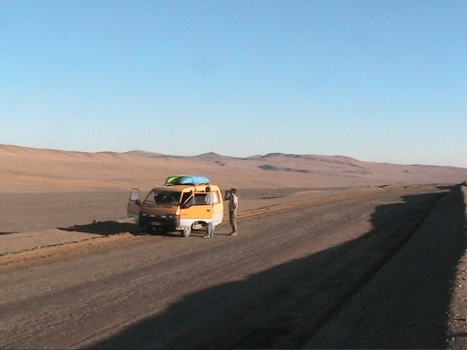 |
| Jim's End-of-the-World Birthday, April 9, 2005. | ********************************************************************************************* Team South celebrated Jim's birthday at the end of the world. 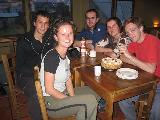 This is what Ushuaia looks like. It's only 1,000 km from Antarctica and now, in the southern hemisphere's autumn, all the penguins have packed their tuxedos and headed north to the beaches of Brazil. Good idea, little fellows. 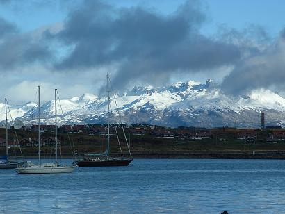 In case you forget, there are constant reminders around the place that the Islas Malvinas are Argentine. OK? 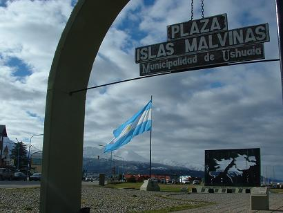 |
| Trying to get to the end of the world, March 31-April 5, 2005. | ********************************************************************************************* Ushuaia, Argentina, is the most southerly city in the world, and that's the only reason for going there. Never has so much energy and time been spent getting somewhere for such little reason. Fittingly, it's quite hard to get there. Team South hooked up with Mike and Bea (USA and Austria) and Matheus and Ewa (Poland) to get the ferry to Porvenir on the island of Tierra del Fuego. 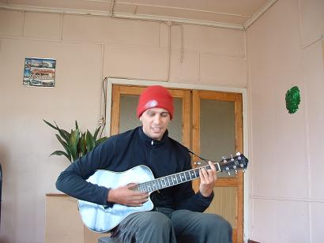 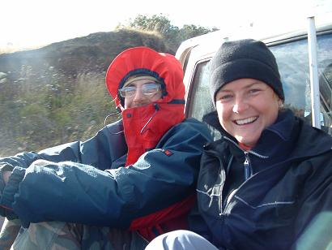 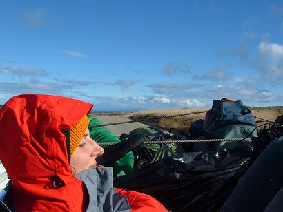 Here's a random orange lifebelt from the Melinka ferry. 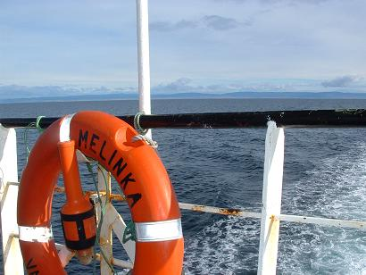 Everyone celebrated Matt's birthday with a hitchhiking extravaganza involving pickups and trucks and a border crossing into Argentina. There are no buses out of Porvenir, contrary to what the book says. Thanks a lot, Lonely Planet. Most of the road on the Argentinian side is two-lane. Some sections, such as this one, are four-lane for about a km. They were temporary runways for fighter jets in the Malvinas war. 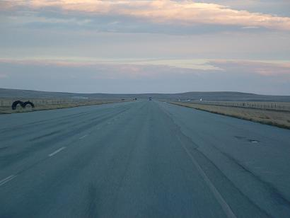 Ushuaia is truly the end of the world. it's even 3000 km from Buenos Aires. It's also overrun with Irish backpackers. Jim is still about 100 m short of the sea, but he's saving that up for tomorrow. The excitement. |
| Torres del Paine, Chile, March 27-29, 2005. | ********************************************************************************************* Pedro gave Jim a lift all the way to the Argentine border town of Rio Turbio, stopping off for coffee at his house. Back on public transport, border formalities completed, Jim heads for a few day's trekking in Torres del Paine National Park, Chile. Suffice to say, the park is astounding. Here are some pictures, instead of words. 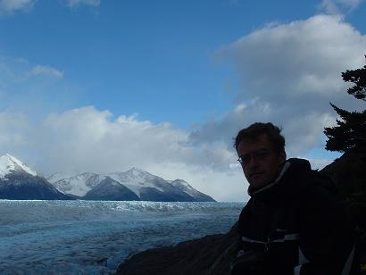 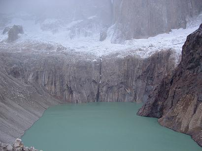 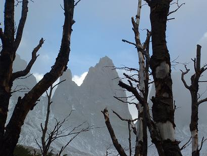 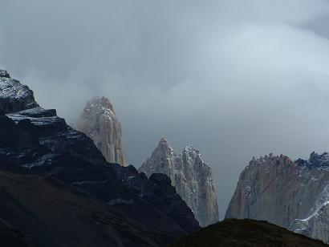 From the 'you can't go anywhere' file, Team South ran into Alina, latterly of UCD Canoe Club, in the park. Beauty and the beast, eh? 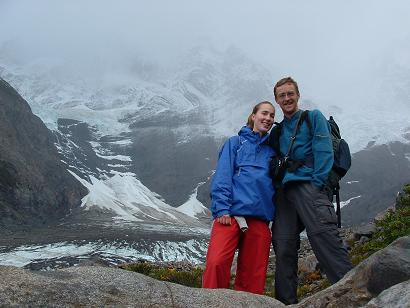 |
| Cementario, Punta Arenas, Chile, April 2, 2005. | ********************************************************************************************* Believe it or not, this is where they bury the dead in Chile's most southerly city. 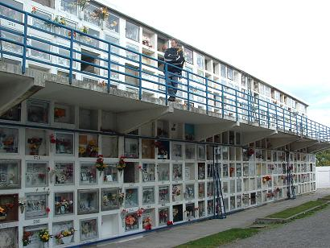 This is where the city founders (the Braun Menendez family) are buried.
|
| Team South, hitchhiking in Patagonia, March 19-25, 2005. | ********************************************************************************************* The only way to hitchhike is to accept that you are probably not going to get to your intended destination, and whereever you end up will do just fine. In attempting to go 1,000 km south along the edge of the Andes to Torres del Paine, Jim ended up 700 km east on the Atlantic, about 1,000 km south along the coast, the 800 km back west, arriving four days later in El Calafate. This is all in line with the trip motto. On the way, he saw many strange and wonderful things, including Perito Moreno Glaciar, 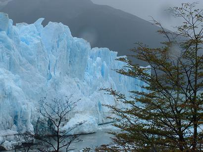 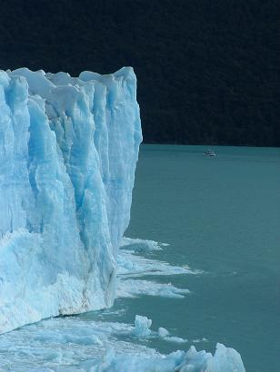 the Argentine president's weekend home, 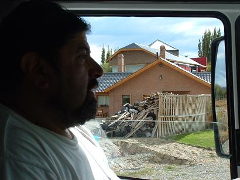 this little guanaco in a petrol station 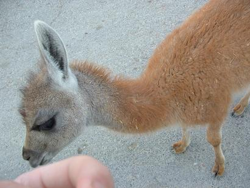 and fibre optic cables bringing the Internet to Tierra del Fuego, 2042 km from Buenos Aires, only another 1000 km to go. 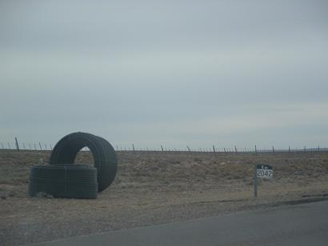 Along the way, he met some of the most generous people imaginable - Christian (on the right), who runs a motorbike delivery service in Caleta Olivia, gave him a lift for 70 km, put him up for the night, fed him beer and pizza, and gave him a gift of a 'mate' cup - the South American herbal drink. 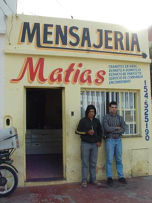 Most of the distance was covered with these frozen-goods smugglers. Jose Luis on the left was born in Gallicia, but has lived all his life in Argentina. Pedro is originally Chilean ands lives near the border. An outstanding pair with whom to spend some days in a truck. 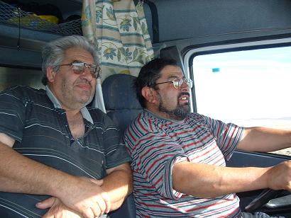 Patagonia is a vast empty place, and there's nothing to see there. It's the nothing that people flock to see. Days of this view... 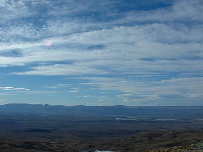 |
| Scotland'04+1 attacks South America in pincer movement, Saint Patrick's Day, 2005. | ********************************************************************************************* It gets complicated from here, so pay attention - the team is splitting into two factions for a month or so. Team North, consisting of Simon, Ferg, and Mr. Fred, is heading into Chile's Atacama Desert on a paragliding buzz. Team South, consisting of a solitary Jim, is hitchhiking its way through Patagonia doing the backpacker thing. So if you only read this site for the kayaking stuff, check back in about one month, when the team will be emotionally reunited in Bolivia. At the fork in the road at Esquel, Argentina, the team toasted the schism with a sniffter of Bushmill's finest. |